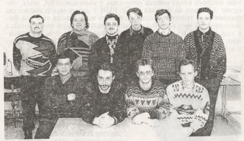
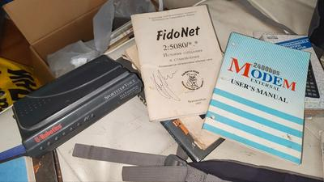
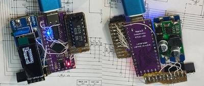
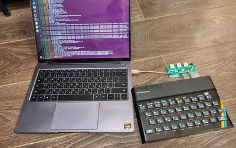
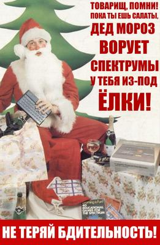
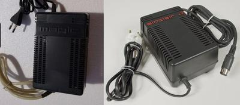
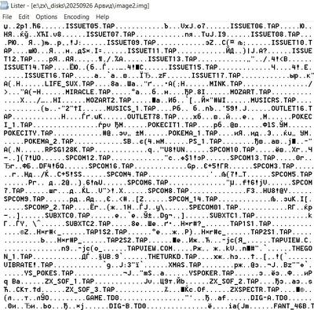
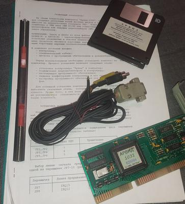
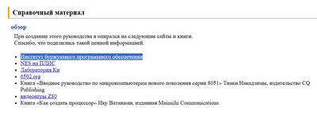

Мода 90-х
Мода 90-х. Если сисадмины предпочитали свитеры, то сисопы — джемперы 😄 (фото из книжки из прошлого поста, качканарская часть 2:5080)
{kind=link}


Мода 90-х. Если сисадмины предпочитали свитеры, то сисопы — джемперы 😄 (фото из книжки из прошлого поста, качканарская часть 2:5080)

Интересный комплект подобрался на барахолке давеча. Модем у одного продавца, книжки у другого. Историю ёбуржского Фидонета надо бы отсканить, в сети в электронном виде не нашел.

...у меня лежали на столе.
Сэр Клайв, как известно, подложил нам свинью, придумав Спектрум ещё в эпоху динозавров (не мог подождать лет пять!), из-за чего оригинальные Спекки все построены на какой-то непонятной комплектухе. ПЗУ там масочные и с распиновкой, не совпадающей с 2764. Память там на двух линейках DRAM, одна из которых сделана из отбраковки, а вторая требует аж три напряжения питания для работы — 5, -5 и 12 вольт.
Вот с последней я все выходные и провозился. У меня образовалось четыре нерабочие платы оригинальных ZX 48K, и для их диагностики потребовался тестер микросхем. Обычные тестеры не подходят из-за напряжений, нужен специализированный. Так-то тестеры такой памяти, 4116, на гитхабе встречаются. Но там это какие-то серьезные продуманные проекты, которые вообще говоря стоит собрать заранее, упаковать в корпус, а потом передать в наследство внукам. Мне же надо было что-то, что можно слепить за вечер на коленке и просто протестить микросхемы.
Родил вот такое вот, как на фото. Китайская LGBT LGT8-ардуина Nano3; панелька; повышающий модуль 5-12 вольт; генератор отрицательного напряжения 12 -> -5 и копеечный OLED-экранчик. Ну и пресловутые два кусочка макетки, помогающие все это соединить в конструкцию пусть не очень жесткую, но и не разваливающуюся от дуновения.
Исходники на гитхабе https://github.com/atsidaev/4116_DRAM_Tester

Купи The Spectrum от Retro Games Ltd и получи USB-спектрум клаву в подарок 😳
Хотел снять небольшой обзор, но докопался до интересного. Егойная клава висит на внутренней USB-шине, да еще и видна как нормальная HID-клава, раскладка которой повторяет надписи на кнопках. Ну то есть ей реально можно пользоваться! Вот это подход у ребят, вот это уважаю!
Надо лишь припаять разъем и всё. Кто не знает — The Spectrum это очередная эмуляторная железка от авторов Amiga Mini и т.п. В общем, ждите видео 😄

С наступающим, друзья! Пусть всё будет хорошо!

Блок питания-то от Магика (и Кворума), оказывается, скопирован с БП от амстрадовского ZX Spectrum +2A/B 😳

И вот читаю я, значит, дискеты от Арвида, и на одной из них лежит только странный файл OSS3.BIN на 200 кило. Что-то меня заставило глянуть на образ через вьюер, и внезапно там на пустом месте вовсе не нули, а... какое-то оглавление спектрумского архива!
Арвид для скорости хранил индекс видеокассеты на жестком диске или дискете. Видимо, это остатки как раз такого индекса. Судя по названиям, там и с World of Spectrum файлы, и с Virtual TR-DOS, но особенно интересен неопознанный архив образов дискет с расширением TD0 (теледиск). Вообще, мне продавец дал еще видеокассету, на которой он думал что-то арвидом записано. Я, конечно, сразу побежал её в видак сувать, думал это от неё индекс. Но по факту там клипы Тани Булановой 😕. Не знаю, разберусь получше и может ещё ему напишу, авось найдет нужную.
Сами образа дискет в комменты кину. Их всего две, на второй там инсталлятор софта под винду.

Внезапно стал обладателем полного, по-видимому, комплекта Арвид. Это отечественная разработка, позволяющая писать АРхивы на ВИДеокассеты. Магнитофон используется обычный бытовой (рулится через ИК-диод), на кассету E-180 влазит порядка полутора гигабайт. Когда Авито подсунуло рекомендацию, я сперва даже не поверил — цена 700 рублей, таких цен уже лет пять не бывает. Была б подключена доставка, ушло б за 15 минут, но, к счастью, был только самовывоз. Оказалось, что продавец в 90-х работал в магазине радиотоваров и продавал там эти Арвиды. Магазин на Первомайской, 18 — думаю, все в Екб поняли, где это. Их там было два магазина, в один вход нормально, а второй в подвале, и вот в последнем. Забавно, я ведь там книжки по Спектруму покупал, и видимо как раз у этого продавца.
Очень хочу запустить. Когда читал описания (а раньше про Арвид писали много, и в прессе, и в интернете), всегда не верилось, что кто-то реально вот такую вот идею довел не просто до прототипа, а аж до серии, и оно работало, и даже стабильно. Выглядеть должно завораживающе.

(блуждаю через гуглотранслейт на сайте японского эмулятора Family Basic)

{kind=link}
{kind=link}
{kind=link}
{kind=link}
{kind=link}
{kind=link}
{kind=link}
{kind=link}